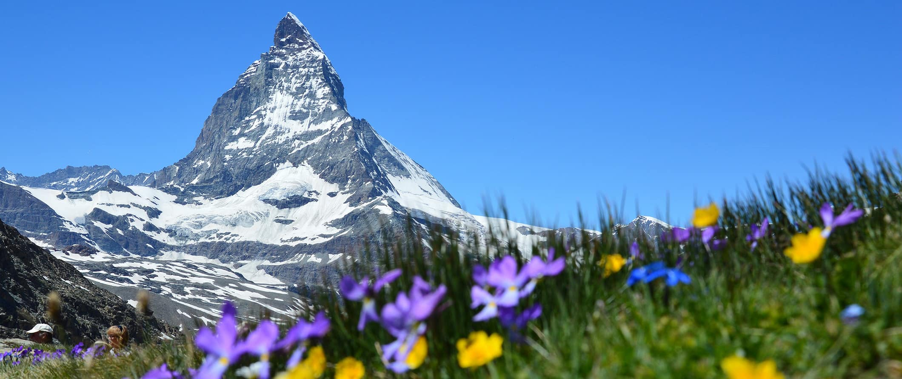

Switzerland
Switzerland is one of our favorite countries in Europe. From mighty mountains, charming old towns, fancy cities,
to scenic train rides, Swiss landscapes will melt your heart (like their cheese – YUM!)
As one of the most expensive countries in Europe, Switzerland is often skipped over by budget travelers.
Visiting Switzerland is not cheaper. Before you even get out of the train station/airport,
you’ll begin to wonder “how the heck did I spend so much money already?!”
Even when I was backpacking Switzerland, I found myself constantly trying to find ways to save money.
Yet, while it is not a cheap destination, Switzerland is one of the most beautiful places on earth.
The country is home to shimmering lakes, picturesque mountains (hello Alps!), tiny walled medieval towns,
soaring peaks, endless green fields you want to run through, delicious chocolate, incredible beer, and friendly,
welcoming people.
Everything runs on time here, the country is safe, and everyone is super nice. I loved my time traveling around Switzerland.
The country rocks no matter what time of the year you visit (summer hiking, winter skiing).
To help lower your costs, use this travel guide to Switzerland to help you plan your trip and save money!
When to Go to Switzerland
Most visitors come in the summer season, from May to September (although in the mountains temperatures don’t really start warming up until June). July and August has the warmest temperatures, with snow-free hiking trails and longer days. If you’re around on August 1st, you’ll witness tons of celebrations for Swiss National Day (fireworks!). Peak temperatures are 65°-82°F (18 to 28 °C), with almost no humidity.
The shoulder seasons are from around April to early May and late October to the end of November, which is
known in Switzerland as Zwischenzeit – the “between time” for the ski and summer seasons. It’s a good time
for city hopping, but the ski resort towns are completely quiet and a lot of things are closed. The weather
can also be unpredictable.

Top 5 Things to See and Do in Switzerland
-
1. Visit the capital,Bern
Bern has an amazing historic town center that you’ll want to walk around all day long. This part of town is filled with medieval
clocktowers, cobblestone streets, churches, and well-preserved sandstone homes.
Be sure to walk the River Aare way, visit the History Museum and the Einstein Museum, and check out the bears at the Bear Park!
2. Ski the matterhorn
The Matterhorn’s sharp angular peak is one of Switzerland’s most iconic attractions.
You’ll have to take a train or bus into the Zermatt area (the closest town to the mountain) as cars aren’t allowed.
Not only do you need to ski here, but you
can come to admire what’s truly a pollutant-free area. And, if you miss ski season, come hike the mountain in the summer.
3. Visit Zurich
Zürich is also set on beautiful Zurich Lake, near the mountains, and is close to a lot of
other cities (like Bern). I love the historic center that opens up on the lake – a perfect day is sitting
in the parks, and drinking a beer on the lakefront. The city is also very arty and full of street art and museums
4. Be adventurous in interlaken
Interlaken is one of the outdoor capitals of the country (though it’s quite touristy
during peak season). There is a lot to do here for the adrenaline-seeker: skydiving over a Swiss glacier,
water-skiing, skiing, hiking, etc. This is also ground zero for backpackers since there are so many free outdoor activities
5. Visit the swiss riviera
The “Swiss Riviera” is situated in Lavaux (Cantan of Vaud) and goes along Lake
Geneva. You can visit unique terraced vineyards that overlook the lake, the 12th-century
castle Château de Chillon built on the water, and the town of Montreux, which is famous for its annual jazz festival.
Other Things to See and Do in Switzerland
1. Join in the Fasnacht Spring Carnival
This festival in Basel is a three-day party that welcomes in the warm
weather and takes place annually on the Monday following Ash Wednesday. It’s something that’s highly anticipated by both
tourists and locals, and it’s definitely Switzerland’s most popular festival. Fasnächtlers dress in elaborate costumes
to hide their identities and parade around town with “cliques” (bands playing basler drums and piccolos).
All the bars and restaurants in town remain open throughout the entire three days. Everyone here is in a good mood!
2. Explore Geneva
As the third largest city in Switzerland, Geneva offers spectacular views of the city’s lake
(Lake Geneva), the world’s largest fountain, the UN, a historic city center, and a collection of international restaurants
to satisfy anyone’s palate (thanks to the UN buildings in town). While you’re here make sure you check out
the Geneva’s Art and History Museum or the Red Cross and Red Crescent Museum. There are 40 museums here in total!
3. Hike Mt. Pilatus
Located right outside the city of Lucerne, this beautiful mountain has breathtaking views
of the alps. From the city, you can take a cable car to the top or (better yet) hike its trails to the top to look out
over the Swiss Alps. There are some easier
trails around the northern side of Pilatus, as well as other attractions in the summer months such as a ropes course.
4. Picnic at the Rhine Falls
Pack a picnic lunch and look out at your view of Europe’s largest waterfall. If you
hop on a boat tour you can get extra close to the giant rock in the middle of the falls, and you’ll also experience the Rhine
Falls Basin. Nearby in the
town of Schaffhausen, you’ll find a medieval castle which also houses a hostel for cheap but interesting accommodations.
5. Explore St. Gallen
The seventh largest city in Switzerland, St. Gallen boasts beautiful museums, colorful murals,
and one-of-a-kind architecture. It doesn’t receive as much tourist traffic as the other cities and regions around the country,
but it’s a fun town full of students and you’re likely to befriend a few locals during your visit. Must-do: visit the Baroque
cathedral and the
Abbey Library, which is home to nearly 170,000 documents. Some are hand-written and over a thousand years old!
6. Visit the Old Villages
Visit the Graubunden area of the country, where you’ll find villages with houses dating
back to the 13th century. Here they also speak an ancient language called Romanch, which has died out everywhere else in
the country and the locals take great pride in keeping the tradition alive. Of course, it’s a haven
for nature lovers – there are 615 lakes and 150 valleys in the region. Visiting here is a true Swiss Alpine experience.
How to Stay Safe in Switzerland
Switzerland is one of the safest countries in the world, including for solo travelers and solo female travelers
. The most common type of crime is pickpocketing in tourist-heavy areas. In some cities, like Geneva, petty
crime is on the rise.
If you’re traveling in the mountains, keep an eye on weather reports and forecasts. The weather can be extreme!
If you’re prone to altitude sickness you will also want to prepare accordingly.
You can read about the 14 travel scams to avoid right here.
Always trust your gut instinct. If a taxi driver seems shady, stop the cab and get out. If your hotel is seedier
than you thought, get out of there. Make copies of your personal documents, including your passport and ID.
If you don’t do it at home, don’t do it in Switzerland!
The most important piece of advice I can offer is to purchase good travel insurance. Travel insurance will
protect you against illness, injury, theft, and cancellations. It’s comprehensive protection
in case anything goes wrong. I never go on a trip without it as I’ve had to use it many times in the past.
Book things to do, attractions and tours with 10% discount